Triplex Pump with Faults
This example models a triplex pump. Three plungers are attached to a single crankshaft with crankpins that are 120 degrees out of phase. The result is that at least one chamber is always discharging which produces smoother flow than single or duplex pumps.
Mechanical, hydraulic, and electrical parameters are all defined in MATLAB. This lets you easily resize the pump. Default parameters are for a CAT Pumps pump model 1051, and the STEP file that is used for the housing was downloaded from the CAT Pumps website.
Effects of failing components are included in this example. Degraded behavior due to seal leakage, blocked inlets, bearing wear, and broken motor windings can be simulated. MATLAB code shows how to accelerate testing by reusing results from previous simulations.
Contents
- Model
- Pump Subsystem
- Plunger 1 Subsystem
- Plunger 1 Subsystem with Faults Enabled
- Electric Subsystem
- Tune Parameters to Match nominal behavior
- Simulation Results from Simscape Logging
- Results with Seal Leak Fault Enabled in Plunger 1
- Results with Block Inlet Fault Enabled in Plunger 1
- Testing Effects of Increasing Seal Leak on Flow Rate and Current
- Testing Effects of Increasing Inlet Blockage on Flow Rate and Current
- Testing Effects of Increasing Bearing Wear on Flow Rate and Current
- Testing Effects of a Broken Winding on Flow Rate and Current
- Testing Many Fault Conditions and Combinations
- Design Fault Classification Algorithm
- Testing Fault Classification Algorithm
Model
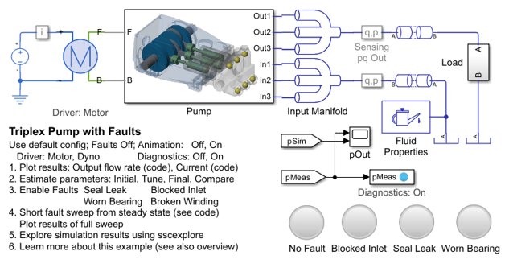
Pump Subsystem
This subsystem models the hydraulic pump. CAD files were imported to model the housing. The three plunger subsystems are identical and linked to a library for easy maintenance. The revolute joint is connected to a model of the electric motor. The parameters in the Plunger subsystems are all set by the mask of the Pump subsystem.

Plunger 1 Subsystem
This subsystem models the plunger, hydraulic chamber, and the check valves that control the flow to the inlet and outlet manifolds. All of the parts are parameterized with MATLAB variables, enabling easy scaling of the system and modification of behavior. The balls of the check valves are provided as a visual reference, where their position is controlled by the hydraulic flow through the check valve. That can be turned off for a minimal boost in simulation speed.

Plunger 1 Subsystem with Faults Enabled
The screenshot below shows the plunger with two faults enabled. The Seal Leak subsystem models leakage past the seals on the plunger. The Check Valve Inlet has its maximum area reduced, modeling a blocked line. These faults are controlled from the mask of the Pump subsystem. When these faults are enabled, a visual element is included in the Mechanics Explorer animation.
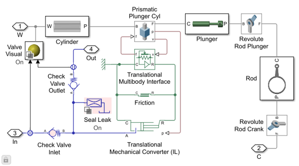
Electric Subsystem
This subsystem models the AC motor that drives the pump. This model abstracts the torque-speed behavior of the combined motor and motor driver in order to support system-level simulation where simulation speed is important. A proportional-integral controller controls the torque to match the desired nominal speed.
The Windings subsystem can model the effect of a single broken winding in the motor. When this fault is enabled, the requested torque is set to 0 when the rotor angle is between 240 and 360 degrees, or one-third of a shaft rotation.
Tune Parameters to Match nominal behavior
Optimization algorithms can be used to tune parameters in order to ensure that the model matches measured data. The plot below shows measured data from a pump exhibiting nominal behavior. The parameters defining the pressure settings for the check valve are tuned until the simulation results match the measured data.
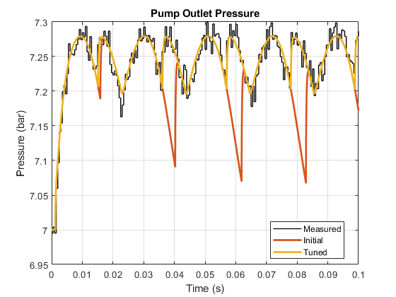Simulation Results from Simscape Logging
The plot below shows the volumetric flow rate at the output of each plunger as well as the overall output of the pump. For this test, no faults are enabled.
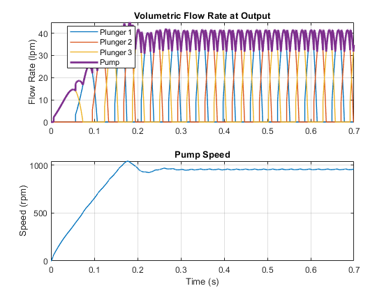Results with Seal Leak Fault Enabled in Plunger 1
The plot below shows the flow rate and pump speed when the seal leak fault is enabled in plunger 1.
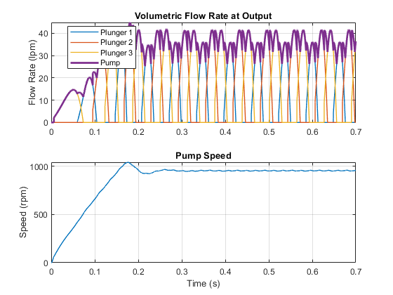Results with Block Inlet Fault Enabled in Plunger 1
The plot below shows the flow rate and pump speed when the blocked inlet fault is enabled in plunger 1.
Testing Effects of Increasing Seal Leak on Flow Rate and Current
The plot below shows the flow rate and pump speed when the seal leak fault is enabled in plunger 1.
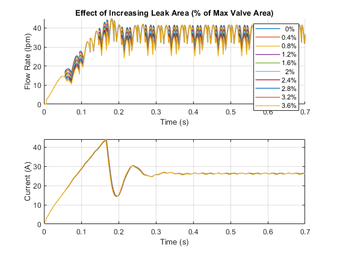Testing Effects of Increasing Inlet Blockage on Flow Rate and Current
The plot below shows the flow rate and pump speed as the blockage on inlet 1 is increased.
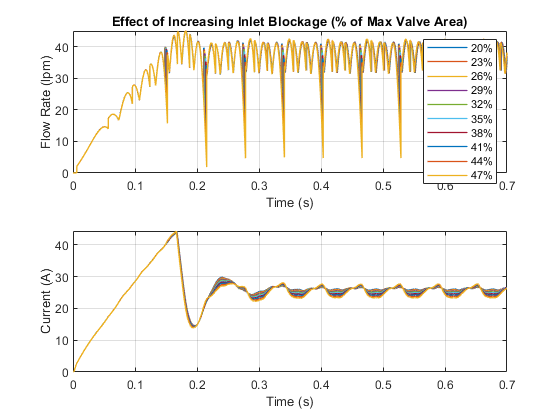Testing Effects of Increasing Bearing Wear on Flow Rate and Current
The plot below shows the flow rate and pump speed as the blockage on inlet 1 is increased.
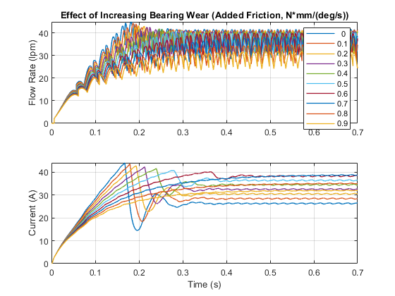Testing Effects of a Broken Winding on Flow Rate and Current
The plot below shows effect of a broken winding on flow rate and motor current. The test is run with a higher level of bearing wear.
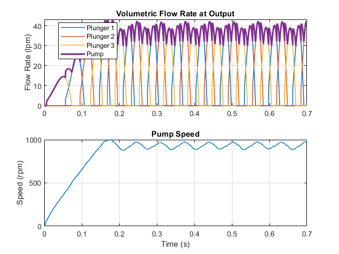Testing Many Fault Conditions and Combinations
The plot below shows how simulations can be restarted from a previously saved result. To accelerate a range of fault tests, the model is simulated with all faults turned off until the pump reaches steady state. That state is saved to the MATLAB workspace. Each fault test is then started from that point. Considerable time is saved by not re-running the test from the beginning every time.
The data plotted below has been sampled and has had noise added to it to replicate the effect of sensor noise in a real system.
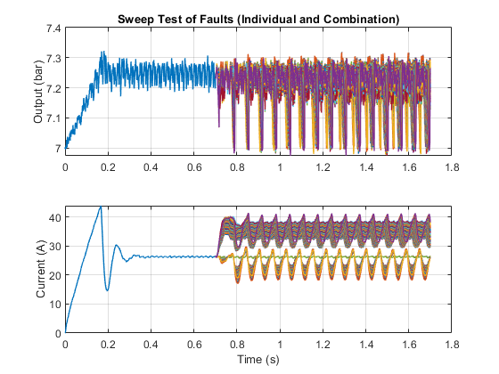The plots below shows the frequency responses of the output pressure grouped by fault combination. This information can be used to train a machine learning algorithm that can be taught to recognize if a pump is failing based on measured data.
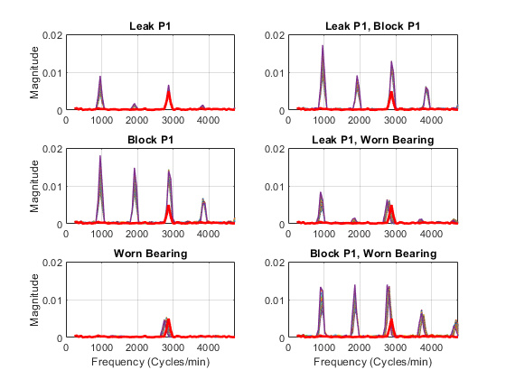Design Fault Classification Algorithm
The Classification Learner App takes you through the steps of designing the fault classification algorithm. It helps you identify which algorithm has the highest level of accuracy in predicting the fault based on the training data.
Testing Fault Classification Algorithm
The data taken from this model has been used to train a machine learning algorithm. This algorithm can look at the data from the output pressure sensor and determine the cause of degraded behavior in the pump. The algorithm has been integrated into the model, and we will test it to see if it properly classifies faults enabled in the model.
This subsystem takes the output from the pressure sensor in the model as an input, and uses the algorithm to determine the fault type and set the HMI lamps visible in the model.
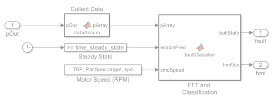This plot shows the results of several runs that test individual and combinations of faults. The legend for the plot shows the output of the fault classification algorithm. The algorithm has detected the fault correctly in each case.
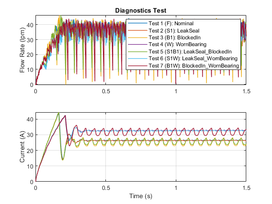